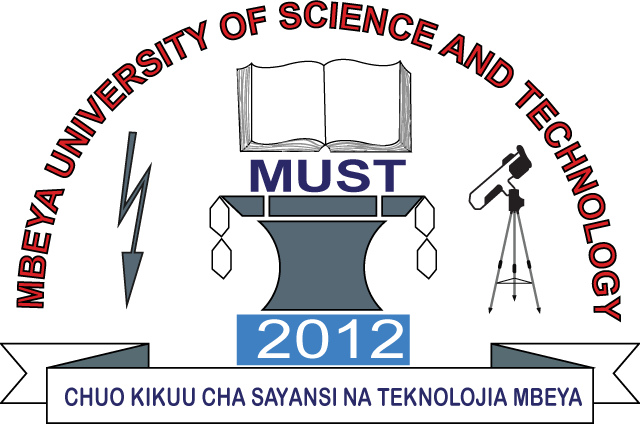
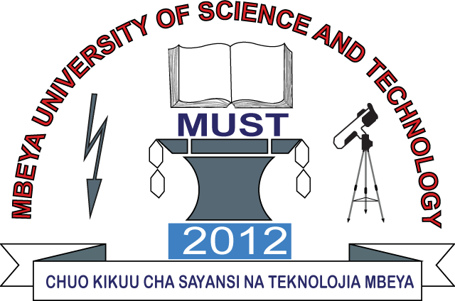
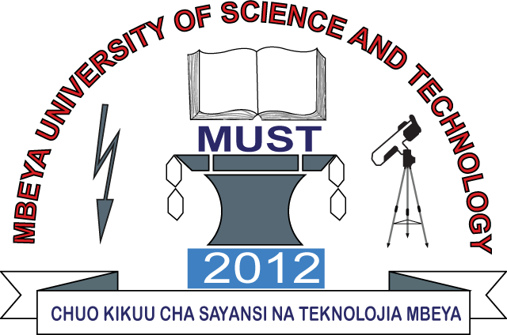

UNITED REPUBLIC OF TANZANIA
MBEYA UNIVERSITY OF SCIENCE AND TECHNOLOGY
STUDENTS ORGANIZATION
(MUSTSO)
MBEYA UNIVERSITY OF SCIENCE AND TECHNOLOGY
STUDENTS ORGANIZATION
(MUSTSO)


Mr. Yohan Lucas
the president of Mbeya University of Science and Technology student organization
(MUTSO), welcomes you to the official website of MUSTSO
As a MUST student and leader, you can access different resources here.
Read More
This place will show all news
MUSTSO stands for Mbeya University of Science and Technology student organization.
This organization was created to connect students and staff
acting as a bridge.
It helps students with their needs and ensures every student enjoys being at MUST.
Some works of MUSTSO are:
To connect students and staff
To ensure security for students
To create connectivity among students
Read More